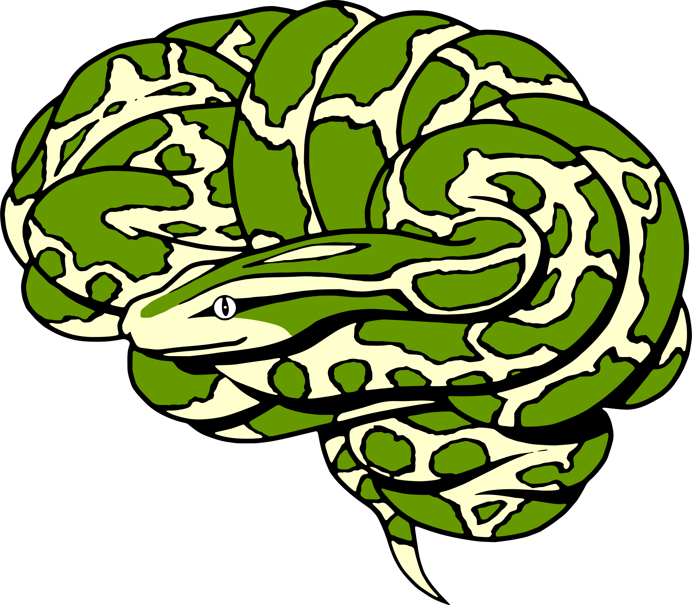

layout: true class: center, middle --- # Using python for neuroscience  ## Marburg, September 2019 ##### License: CC0 | Image credit: Arno Klein --- layout: false .left-column2[ ## Objectives ## Your Role ## Schedule ## Logistics ## meet & greet ] --- .left-column[ ## Objectives ] .right-column[ #### Gain Skills - using python for diverse neuroscientific analyses - Empower you with tools and technologies to do reproducible, scalable, and efficient research #### Get Involved - Familiarize you with the Python ecosystem for scientific work - Become an active part of a fun & fast growing movement #### Be Social - Interact with each other, help each other and learn from each other - Get to know other participants and their projects #### Share - Bring everything you've learnend to your home institution ] --- .left-column[ ## Objectives ## Your Role ] .right-column[ - **Interrupt and ask questions** - Use the google doc [here](https://docs.google.com/document/d/1ESy1OXgVi3lgi7IW-RONjUbvOcDYkO0Fx6qXiEKSXBA/edit?usp=sharing) to interact with us and other participants. Ask questions, help others and give feedback. - The google doc is also a great way to take and share notes - Help each other out - Tell us about cool things that you are working on or you are aware of - Talk to everyone - Give us feedback and help improve the lectures ] --- .left-column[ ## Objectives ## Your Role ] .right-column[ **Be aware of 3 important points:** - this is a 2 day workshop, intended to show you the absolute basics of an unbelievably broad ecosystem and it's possibilities: - a lot of the thinks will be completly new and/or different from what you did/how you worked so far - don't expect to understand and know everything about everything we'll talk about after the 2 days - it's about knowing what's out there, how it can be done and why it's useful - if you want to get the most out of it, show up, be committed and start using what you'll see and hear here in your own research, otherwise you never gonna learn it - thinks take time, but it's definitely worth the effort and one of the best research communities has your back ] --- .left-column[ ## Objectives ## Your Role ] .right-column[ **Be aware of 3 important points:** - it's your work, take responsibility: - no one can know/be an expert in everything and that's okay - however, you need have a basic understand of what you're doing and why you're doing it - a lot of the neuroimaging software out there let do you a lot of stuff by "just clicking buttons", which is dangerous and (very often) prevents a deeper understanding - the tools presented here usually require you to think way more about your data and the analyses you want to apply, but are yet very easy to use - don't do things just because they're "fancy" or "this is how it was always done" ] --- .left-column[ ## Objectives ## Your Role ] .right-column[ **Be aware of 3 important points:** - BE NICE AND RESPECTFUL TO THE IT FOLKS: - your lab's/institute's/university's IT is not there to make all your dreams come true (even if they do) - don't expect them to do your work, implement everything you want or provide 24/7 support for everything that's out there - these folks have to guarantee that the infrastructure is working for the majority of people in a stable and robust manner - talk to them, asking what's possible and what's not - don't go snitching to the "bosses", but work together and try your best to also support the IT folks ] --- .left-column[ ## Objectives ## Your Role ## Schedule ] .right-column[ - our current optimistic schedule can be found [here](https://nbviewer.jupyter.org/github/PeerHerholz/workshop_magdeburg/blob/master/program.ipynb) ] --- .left-column[ ## Objectives ## Your Role ## Schedule ## Logistics ] .right-column[ - Able to get Docker up and running - Able to `pull` docker containers - The sessions may take up to 10 - 15G of space - Come talk to us if you don't have that much or think you will run out - All materials and notes are available online on [github](https://github.com/PeerHerholz/workshop_magdeburg) - Use the communication channels: - Take notes online [here](https://docs.google.com/document/d/10Bh0hnVeczhSphwAerVDQ4XFuP_Kzx_wxDxy0N3WGss/edit?usp=sharing) - Provide feedback whenever you have any - Ask us and other participants for help ] --- .left-column[ ## Objectives ## Your Role ## Schedule ## Logistics ## meet & greet ] .right-column[ ### Doctor who? - your lovely and kind instructors - tell the gang something about you: - who are you? what are you working on? why are you interested in this workshop (something besides "I had to go" or "it was cheap") ? ] --- name: inverse layout: true class: center, middle, inverse --- # Questions?